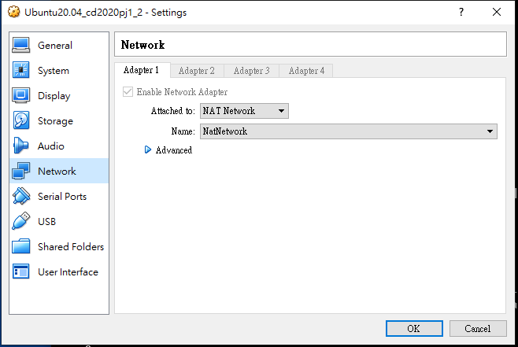
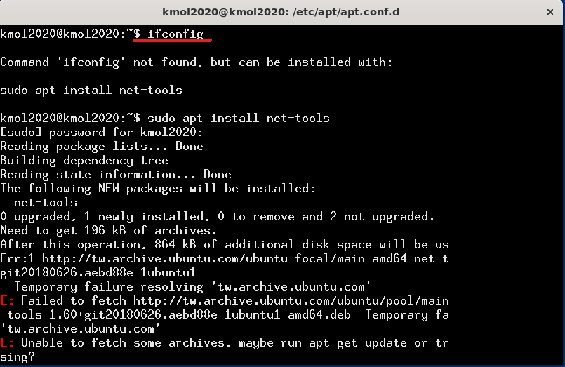
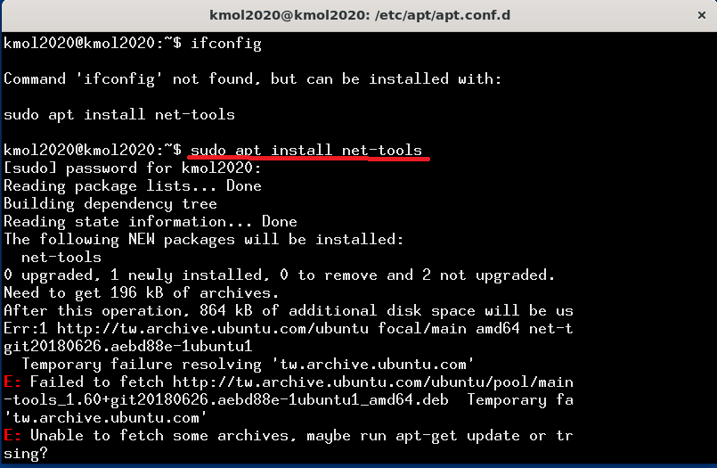
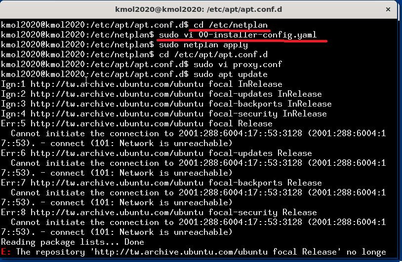
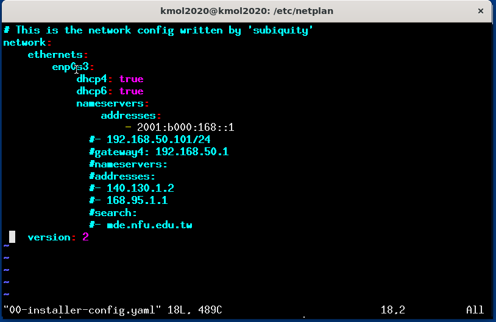
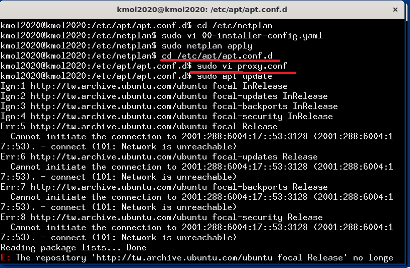
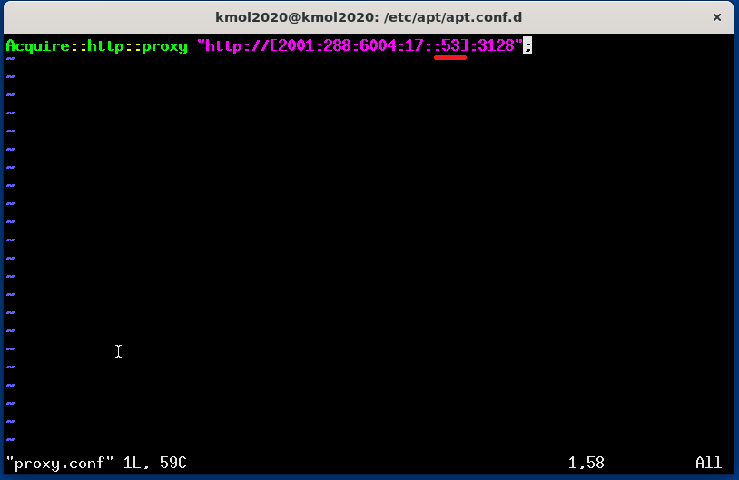
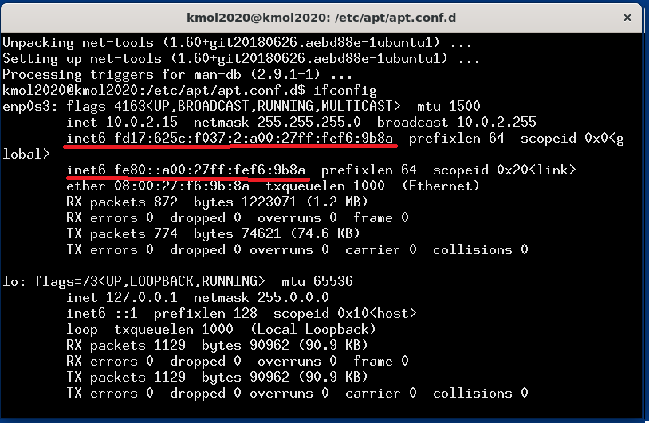

DistanceSensor Sensors <<
Previous Next >> 期末報告影片
VirtualBox
(IPv6) Setting VirtualBox Network
1.
設定調成NAT Network

2.
打這個指令尋找IPv6網路(找不到的話繼續下面的步驟)
ifconfig

3.
安裝網路工具，密碼為kmol2020
sudo apt install net-tools

4.
到 /etc/netplan檢查00-installer-config.yaml 檔案內的設定
cd /etc/netplan
sudo vi 00-installer-config.yaml

5.
將00-installer-config.yaml設定改為這樣

編輯完成後按insert退出編輯>esc>:wq跳出編輯並儲存，並更新netplan設定
sudo netplan apply
6.
到 /etc/apt/apt.conf.d 目錄下檢查是否有proxy.conf檔案
cd /etc/apt/apt.conf.d
sudo vi proxy.conf

7.
proxy.conf的檔案內容
53為proxy的port號

新增完內容更新apt
sudo apt update
8.
再試一次ifconfig尋找IPv6網路
紅線為尋找的IPv6的位址

設定影片
DistanceSensor Sensors <<
Previous Next >> 期末報告影片